The complete how-to: play it, shape it with no dials, and keep what you make.
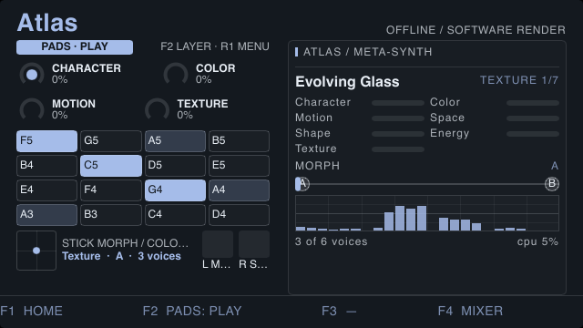
Atlas is a library of designed sounds on one surface. Each sound is a full synthesizer patch, but you never have to open it up: every sound answers to the same seven performance controls, plus a MORPH that glides the whole sound from one stored state to another. Learn the surface once and it works the same on every sound.
This guide is for the Portamax device and its simulator. The device has no knobs, so everything here is done with the pads, the D-pad, the joystick, the two hand sensors, the shoulder buttons and the four F buttons.
Whatever sound is loaded, these are the controls you play. A sound decides what each one does; the name and place never change.
| Control | It is for | What it moves in the factory sounds |
|---|---|---|
| CHARACTER | The sound's main identity | Breath, Fold, Table Position · Shape · Vowel |
| COLOR | Brightness and tone | Cutoff, Resonance, Tone, Edge |
| MOTION | How much it moves by itself | Table and Grain Drift, Wobble, Vowel Walk |
| SPACE | Room, depth, width | Reverb, Delay, Hall, Size, Width |
| SHAPE | Body and decay | Body, Damping, Filter Decay, Vibrato |
| ENERGY | Intensity | Level, Drive, Distortion, Edge |
| TEXTURE | Grain and detail | Grain Density, Grit, Breath, Ensemble |
| MORPH | Glides through the sound's stored states, A to B (up to D) | Every parameter at once |
Each sound's designer decides exactly what a control moves, and one control usually moves several parameters at once. The right-hand column is what the factory sounds do. A control a sound doesn't use is simply not listed in its menu.
| Sound | Kind | States |
|---|---|---|
| Evolving Glass | Texture | A, B |
| Init | Keys | A, B |
| Sub Pressure | Bass (plays one note at a time) | A, B |
| Hum Choir | Pad | A, B |
| Modal Garden | Pluck | A, B |
| Ghost Strings | Acoustic | A, B |
| Dust Drone | Drone | A, B |
Anything you save later appears after these in the same list (see section 9).
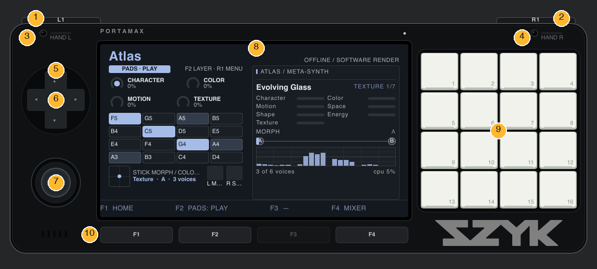
| Control | On the Play view | In the menu (R1) |
|---|---|---|
| D-pad ▲ ▼ | Next / previous sound | Move up / down a row |
| D-pad ◄ ► | Turn the focused dial down / up (1% a press; hold to repeat) | Change the highlighted value |
| SELECT, tap | Move focus to the next dial | Run an action row (Store, Mutate, Revert, Save) |
| SELECT, hold ½ s | Reset the focused dial | Reset the highlighted value |
| R1 | Open the menu | Back to the Play view |
| L1 (held) | Show the Controls layer while held | — |
| F1 | Home (from Home itself, Settings) | |
| F2 | Next pad layer: PLAY → STATES → CONTROLS → MOMENTS | |
| F3 | Nothing in Atlas (it has no transport; the bar shows a dash) | |
| F4 | Jump to the Mixer | |
| Pads | Depends on the layer: notes, states, controls or moments (sections 7 and 8) | |
| Joystick | X pushes MORPH, Y pushes COLOR (defaults) | — |
| Hand sensors | Left pushes MOTION, right pushes SPACE (defaults) | — |
| Pad pressure | Pushes ENERGY (default) | — |
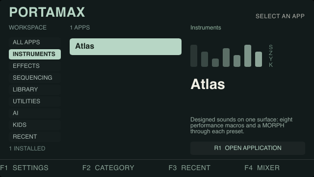
Atlas always opens on its Play view.
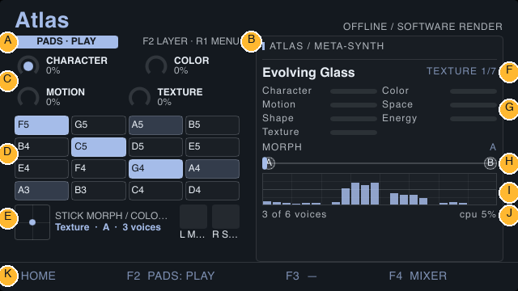
On the PLAY layer the 16 pads are a keyboard in the current scale. The lowest note is the bottom-left pad (13) and notes rise left to right, then up a row, to the top-right (pad 4). Hold a pad for as long as you want the note; let go and it releases. Hold several for chords (how many can sound depends on the sound and the CPU budget; "3 of 6 voices" is shown on the screen).
The pad map shows note names. The notes that are the root of the scale are shaded so you always know where "home" is. You can change the key and scale in the menu (Perform section): Root, Scale and Transpose. The 13 scales are Chromatic, Major, Minor, Dorian, Phrygian, Lydian, Mixolydian, Harmonic Minor, Pentatonic Major, Pentatonic Minor, Blues, Whole Tone and Hirajoshi. A MIDI keyboard also plays Atlas directly.
The pads are pressure sensitive. Press harder and ENERGY rises (by up to 60%); ease off and it falls back exactly. On the simulator, which has no pressure, a held pad counts as medium pressure.
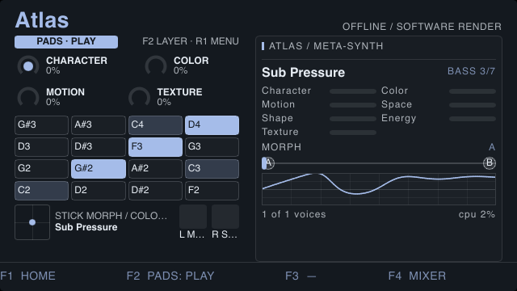
On the Play view press D-pad ▲ for the next sound and ▼ for the previous one; the list wraps. The name and its position (3/7) appear at the top of the right panel. Notes you are holding are released when the sound changes, and the new sound crossfades in, so there is no click or crash.
You can also pick by name in the menu: the first row is Preset; D-pad ◄ ► steps through the same list.
There are four ways to change a sound, from slowest and most precise to fastest and most expressive.
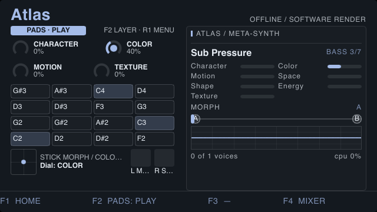
One dial is focused at a time. D-pad ◄ ► turns it down or up, 1% for each press, and holding the button repeats (about nine or ten a second). SELECT moves the focus on. Holding SELECT for half a second puts the focused dial back to zero.
The focus walks through the controls in this order, two to a pair:
| Screen of four dials | Order SELECT visits them |
|---|---|
| First screen | CHARACTER → COLOR → MOTION → TEXTURE |
| Second screen | SPACE → SHAPE → ENERGY → MORPH → back to CHARACTER |
The screen shows the current pair and its neighbour, so it doesn't jump on every tap.
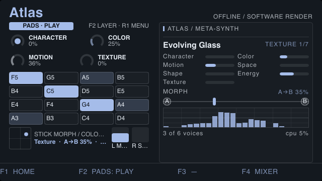
| Source | Pushes (Atlas default) | Range |
|---|---|---|
| Joystick left / right | MORPH | up to ±50% |
| Joystick up / down | COLOR | up to ±50% |
| Left hand sensor | MOTION | up to +60% (closer = more) |
| Right hand sensor | SPACE | up to +60% |
| Pad pressure | ENERGY | up to +60% (firmest pad held) |
| Mod wheel / aftertouch (MIDI keyboard) | Follow the joystick's Y / X |
These add to the dial's own setting; they never overwrite it. Let go, and every control returns exactly to where you had set it. If you've pushed somewhere you like, click the joystick to keep it: the pushed values become the new settings. The joystick is ignored after a click until it has returned to centre, so letting go doesn't push the sound back.
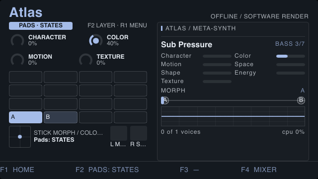
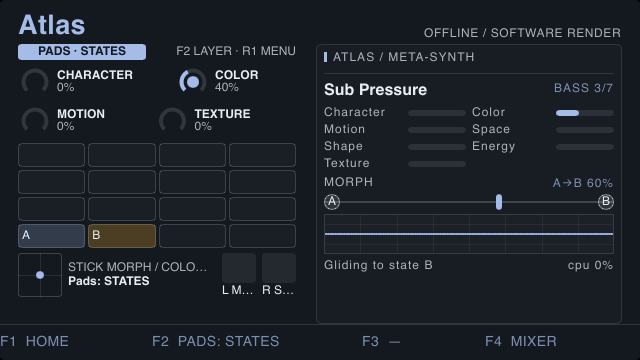
Press F2 once to reach the STATES layer. The bottom row of pads (13–16) are states A, B, C and D, lit only for the states this sound has. Tap one and MORPH glides there in about a second. Nothing sounds when you tap these pads; they are for choosing, not playing, and any note you were holding is released. Press F2 until the badge says PLAY to play again.
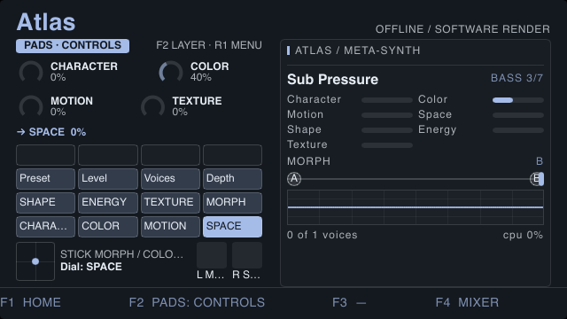
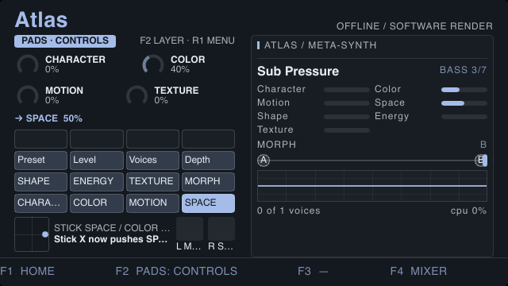
The defaults won't suit every sound or every player, so you can rewire them:
A choice such as Preset, Voices or Depth can't be pushed by an expression source, so binding to one is refused with a message. Holding L1 to peek at the Controls layer never changes any binding. Your bindings are saved with the app and are still there next time.
| Pad row (bottom to top) | Pads (left → right) |
|---|---|
| Bottom (13–16) | CHARACTER, COLOR, MOTION, SPACE |
| Second (9–12) | SHAPE, ENERGY, TEXTURE, MORPH |
| Third (5–8) | Preset, Level, Voices, Depth |
| Top (1–4) | Unused |
On this layer D-pad ◄ ► also adjusts the grabbed control, so it doubles as a quick way to set any of the twelve.
F2 steps the pad layer. The badge on the screen always says which one you're on.
| Layer | The pads are | Use it to |
|---|---|---|
| PLAY | A scale keyboard | Play notes |
| STATES | Bottom row = states A–D | Glide MORPH to a state |
| CONTROLS | The 12 controls | Grab a control; bind sources to it |
| MOMENTS | 16 memories | Store and recall whole sounds |
Hold L1 on any layer to see the CONTROLS layer for as long as you hold it; let go and you're back where you were.
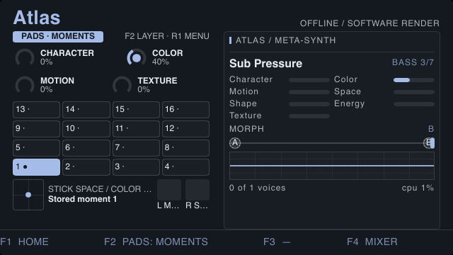
A moment remembers the whole sound: which sound it was, every state's parameters, the seven controls, MORPH and the settings. Storing ignores any pushing your hands are doing at that moment, so a moment never captures a passing gesture. Moments are saved to the device's storage and survive a restart.
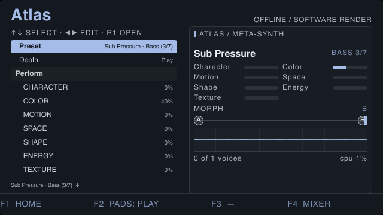
Press R1 to open the menu. D-pad ▲ ▼ moves between rows; D-pad ◄ ► changes the highlighted value; SELECT runs an action row; holding SELECT resets the highlighted value. R1 again returns to the Play view. A small arrow at the bottom says there are more rows below (or above).
The Depth row decides how much the menu shows, so a beginner isn't buried:
| Depth | Adds |
|---|---|
| Play | Preset, Depth, the seven controls and MORPH, then Level, Voices, Root, Scale, Transpose. |
| Edit | Every parameter of the sound, by page (the sound defines its pages); the voice settings Attack, Decay, Sustain, Release, Glide and Velocity; and the States tools: Store, Mutate, Revert, Save. |
| Deep | The Engine section: CPU Budget, the Cost of the sound, and every block in its signal graph with live activity. |
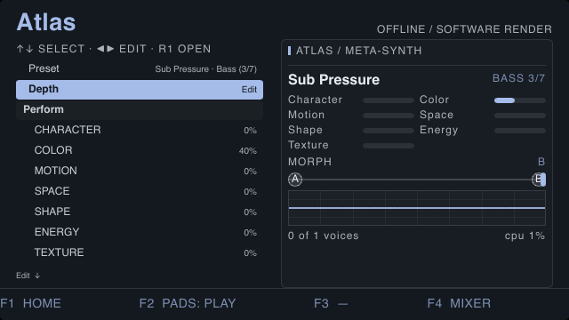
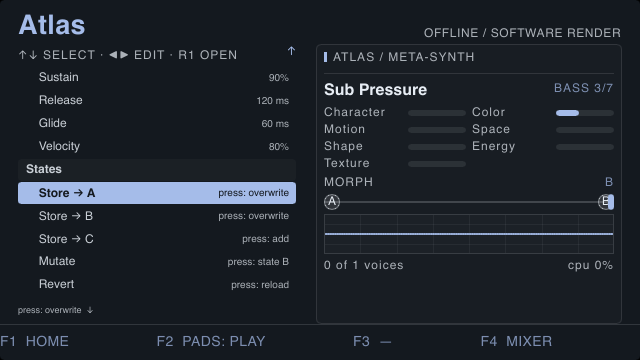
| Row | What pressing SELECT does |
|---|---|
| Store → A / B / C / D | Stores the sound as you hear it now (including where MORPH is) into that state. "overwrite" replaces an existing state; "add" makes a new one, up to four. New states between the old last one and the one you store start as copies of the last. |
| Mutate | Nudges every parameter of the state MORPH is nearest by a small random amount. Good for happy accidents; press again for more, or Revert to go back. |
| Revert | Reloads the sound from its saved copy, undoing your edits. |
| Save | Saves a copy of the whole sound as a new preset. It never overwrites a factory sound (a name that already exists gets _2, _3…). The copy is a plain file you can share, and it joins the sound list immediately. |
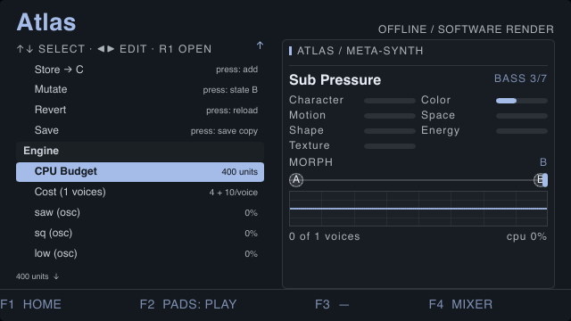
The CPU Budget caps how many notes can sound so a heavy sound plays fewer notes instead of glitching. The Cost row shows what the current sound costs (a fixed part plus a part for each note). Lower the budget to hear how a sound will behave on a slower target.
| Symptom | Why, and what to do |
|---|---|
| Pads make no sound | Check the badge: only PLAY plays notes. Press F2 until it says PLAY. Also check Level and Voices in the menu. |
| A pad shows a note but the sound is thin | Some sounds are one-note (Sub Pressure). Look at "x of y voices". |
| ◄ ► change a list row instead of the dial I wanted | You're in the menu. Press R1 to return to the Play view, where ◄ ► turn the focused dial. |
| I pushed the joystick and the sound jumped back | That's by design: pushing is temporary. Click the joystick to keep it. |
| "…is a choice: nothing can push it" | You tried to bind Preset, Voices or Depth. Choose a continuous control instead. |
| A sound won't load | The status line names the problem. Atlas keeps the previous sound rather than dropping out. |
| Notes cut off in a busy chord | CPU Budget is capping voices. Raise it (Deep depth) or play fewer notes. |
cargo run simulator)| Device control | Key |
|---|---|
| Pads 1–16 | 1234 / QWER / ASDF / ZXCV (top row to bottom row) |
| F1–F4 | F1 F2 F3 F4 |
| D-pad ◄ ► | , and . |
| SELECT, tap / hold | \ / / |
| Joystick | Arrow keys; K clicks it |
| Hand sensors | O (left), P (right), each at 70% |
| L1 / R1 | Hold 9 / 0 |
| D-pad ▲ ▼ | No key is mapped in this simulator while Atlas is open (the arrow keys are the joystick). Use the on-screen D-pad in the Slint simulator (cargo run --example slint_home_live), a gamepad, or the menu. |
These are the shipped defaults; any of them can be changed in the Controller app, and the layout on Home and in apps without a play view is different.
| DualSense | Does |
|---|---|
| D-pad ▲ ▼ | Browse (next / previous sound; rows in the menu) |
| D-pad ► ◄ | Turn the focused dial up / down |
| L3 (press left stick) | SELECT |
| ✕ ○ □ △ | Play pads 13, 14, 15, 16 (the four lowest notes) |
| L1 / R1 | Peek at Controls / open the menu |
| L2 / R2 | Left / right hand sensor (the harder you pull, the closer the hand) |
| Right stick; R3 | The joystick; its click |
| Options / Create | F2 (change pad layer) / F3 |
| PS button, touchpad click | Home |
| Not bound | Reset (hold SELECT), F1 and F4 (Mixer) have no default button (Home is on the PS button); bind them in the Controller app. |